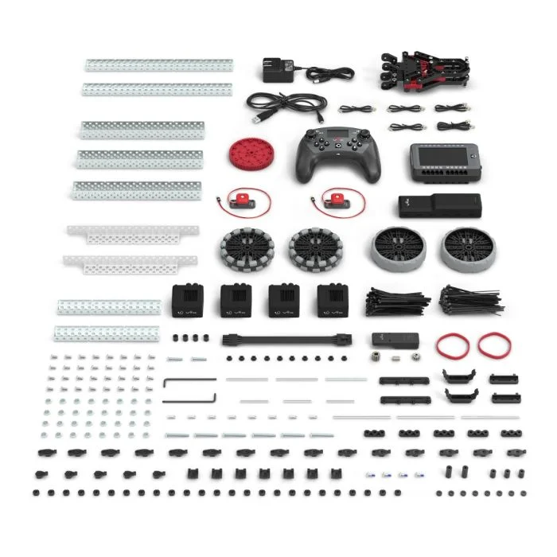
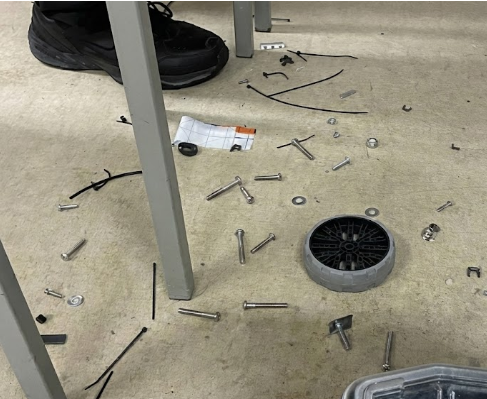
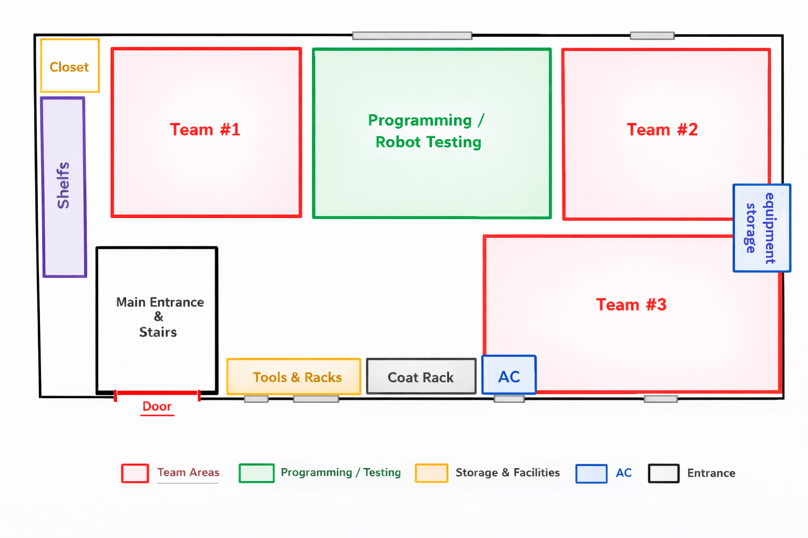

Praxis II / Community RFP
Retrieving and Sorting Loose Parts at STL Robotics
A request for proposal for a high school VEX team that loses screws to the floor faster than it finds them again.
What this was
This is the community RFP our Praxis II team wrote for STL Robotics, the VEX program at St. Theresa of Lisieux Catholic High School. Six student teams share two portables, meet several times a week after school, and leave a trail of nuts, screws, zip ties, and plastic debris on the floor. The document asks another design team to build something that picks that mess up and sorts the metal hardware well enough to put back in the parts bins instead of the trash.
I was part of the authoring team. We spent time inside the portables, read how STLR runs build sessions, and interviewed members and leaders so the need statement was theirs, not just ours guessing from the hallway. The full PDF is the formal submission. This page is the short version I would use to explain the project to someone outside Praxis.


The community
STLR is not a single club table. It is six ten person teams, three teacher advisors, and a competition calendar that can stretch build nights from one hour to seven when a tournament is close. Students build for the current VEX V5 game (Push Back during our study year), test on the grey tile field in the middle of the portable, and organize cleanup themselves. Advisors care about safety and budgets, but they are not the ones crawling under desks for #8-32 screws.
We mapped stakeholders from students and responding design teams to teachers, school admin, and VEX as a tertiary partner. The primary need we heard: cleanup must not slow robot work during the session, but after the session the floor still has to be cleared without throwing away reusable metal parts because sorting feels too slow.

The opportunity
Parts fall because building fast is the first priority. Cleanup between sessions is rare because the tools they already have are painful. Hand pickup means crawling under tables for dirty hardware. Brooms move dirt quickly but everything still lands in one pile. Shop vacs are bulky. Magnetic sweepers help with steel but do not sort lengths. Section 5 compares four reference designs in the gallery below. Interview quotes in the appendix are blunt: swept piles often go straight to the trash because nobody wants to sit and separate trash from screws.
We scoped sorting to metallic VEX hardware (nuts, screws, washers in Appendix D) because those parts are standardized, expensive, and worth recovering. The design should still collect plastic and other debris, but the precision work is on metal. Members asked for collection and sorting together so sorting is not a second chore after a long night.
Goals we set for responders
Section 6 turns interviews into measurable objectives. Examples: pick up parts from about 10 mm spacers up to 11 inch zip ties and 4 inch traction wheels; sort metallic hardware with greater than 95% accuracy; reach under tables and around the field; finish meaningful floor cleanup in about 15 minutes; keep push/pull forces under 110 N and lifted loads under 7 kg; avoid staining or denting the portable floors. We also wrote NGO tables linking needs, goals, and objectives so responders could trace every requirement back to a stakeholder quote.
Below are example pages showing how those requirements are laid out. They are not the full document, just samples of the NGO diagram and the goal/objective tables responders would use.
How we worked
The report includes calendar screenshots, portable dimensions, part catalogs, and interview transcripts in the appendix. We listed our own biases up front: engineering students like measurable problems, we had limited time in the space, and we cared about making a strong Praxis project. Mitigations were more interviews, executive check ins, and primary photos from real sessions.
We compared four reference designs (broom and dustpan, magnetic sweeper, shop vac, M3 bolt sorter) against seven goal areas: collection coverage, sorting, portable geometry, safety, ergonomics, and floor protection. None of them collected and sorted at the scale STLR wanted, which is why the RFP exists.
The conclusion asks for a solution that is safe in a crowded portable, usable by different members, and honest about ergonomics so cleanup is not only done by the tallest person on the team. The hope is simple: less time as janitors, more time building robots they care about.
What I took from it
This was my first long community facing document. It taught me that a good RFP sounds like the stakeholders, not like a textbook. The quotes about trash bags full of mixed hardware did more work than another paragraph of our own analysis. Framing sorting as a budget and morale issue, not just tidiness, made the opportunity feel real.
If you want every table, cited interview, and appendix dimension, that is all in the submitted PDF. This page is the five minute tour.